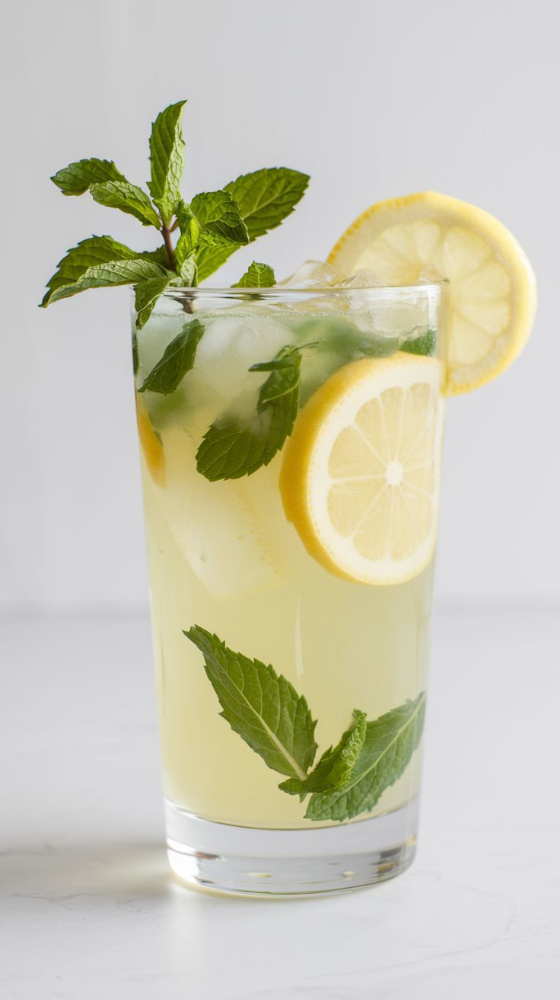
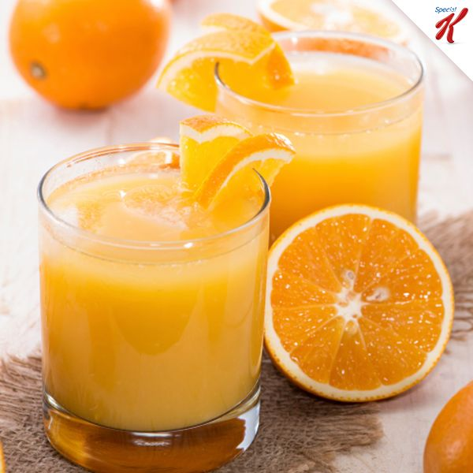
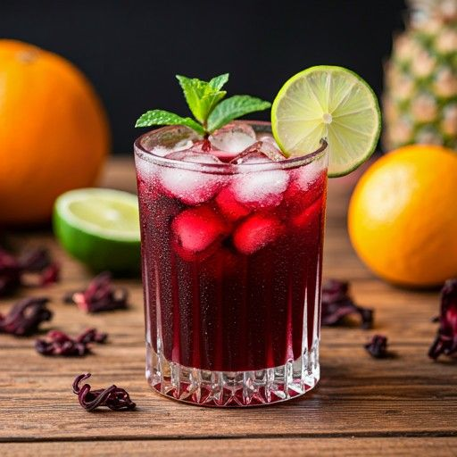
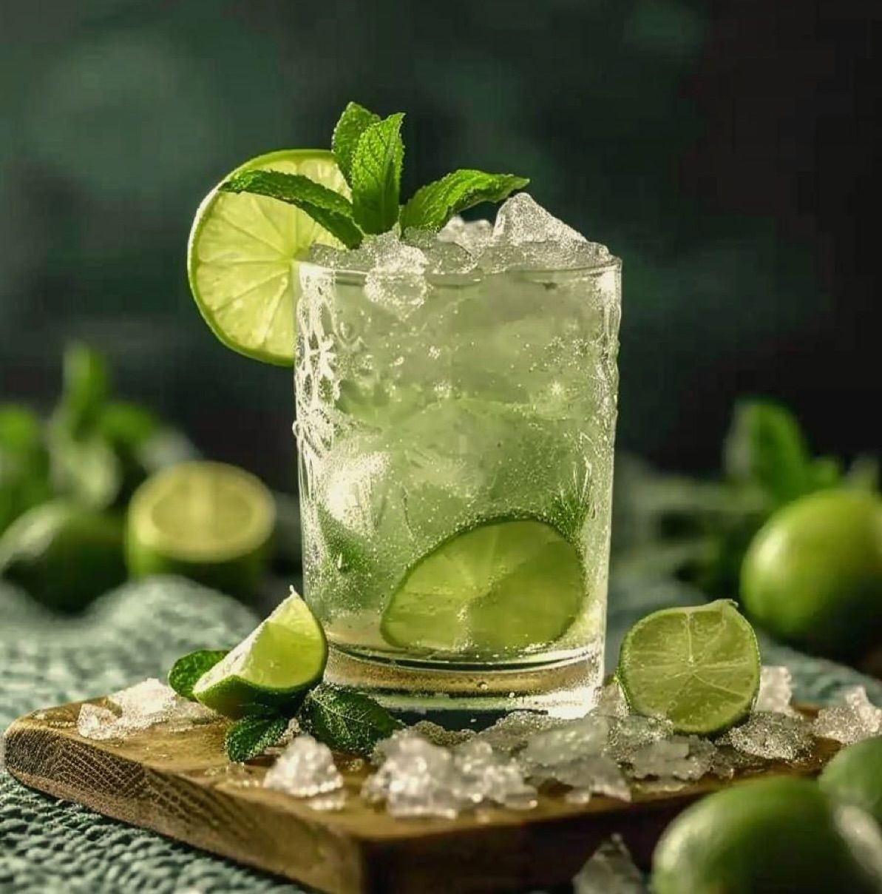
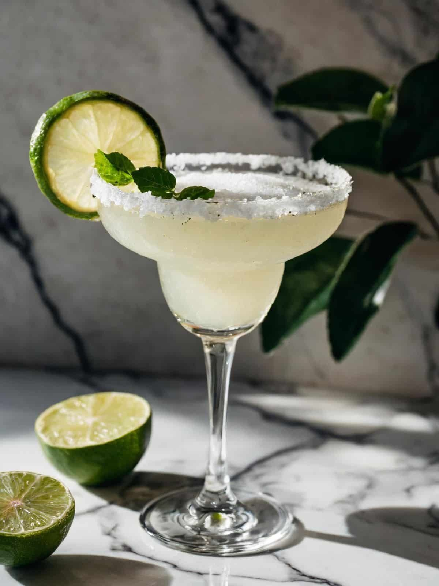

Menú de Bebidas
Bebidas Sin Alcohol
-
Limonada Natural
Ingredientes: Limones frescos, agua, azúcar, hielo.Receta: Exprime los limones, mezcla con agua fría y azúcar al gusto. Sirve con hielo.
-
Jugo de Naranja
Ingredientes: Naranjas frescas.Receta: Exprime las naranjas y sirve inmediatamente para conservar vitaminas.
-
Agua de Jamaica
Ingredientes: Flor de jamaica, azúcar, agua.Receta: Hierve la flor de jamaica, cuela, añade azúcar y sirve fría.
Bebidas Con Alcohol
-
Mojito Clásico
Ingredientes: Ron blanco, hojas de menta, azúcar, jugo de lima, soda.Receta: Machaca menta con azúcar y jugo de lima, añade ron, hielo y soda.
-
Margarita
Ingredientes: Tequila, triple sec, jugo de lima, sal para el borde.Receta: Mezcla tequila, triple sec y jugo de lima. Sirve en vaso con borde salado.
-
Michelada
Ingredientes: Cerveza, jugo de limón, salsa picante, sal, salsa inglesa.Receta: Mezcla ingredientes en vaso con sal, añade cerveza fría.